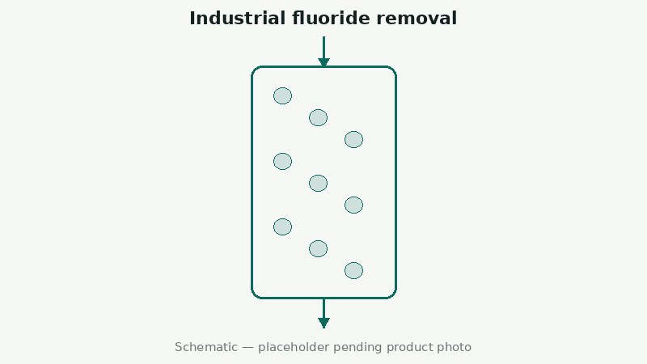

Precipitation cuts the bulk of the fluoride load but plateaus well above tight discharge limits. Adsorption is the polishing stage that follows. Fluoride activity comes from a functionalised surface — on VS-DA300, supported alumina at 8–15% Al₂O₃ giving a Langmuir Qmax of ≥ 20 mg F⁻/g — not from ordinary precipitated silica. Dynamic capacity runs at 70–80% of the static figure.
This article covers industrial fluoride-bearing wastewater only — not drinking water, municipal supply or household point-of-use treatment. Vistasilica supplies material, data, screening and test support; engineering design, local permitting, final discharge compliance and spent-media disposal remain with the customer or their licensed local partner.
Calcium precipitation is the standard first move on high-fluoride wastewater, and it is efficient at what it does: lime or calcium chloride converts dissolved fluoride into calcium fluoride sludge, taking the concentration down by orders of magnitude at low reagent cost. The problem is where it stops. The residual is governed by the solubility of calcium fluoride under the actual conditions in the tank, and in practice plants find the curve flattens well above the limits that semiconductor, electroplating and photovoltaic sites are now held to.
Pushing precipitation harder past that point has diminishing returns and rising costs — more reagent, more sludge to dewater and dispose of, and a process that becomes sensitive to swings in the incoming stream. This is the gap adsorption is meant to fill: not to replace the front end, but to take the water from the precipitation plateau down to the discharge target, on a much smaller mass of material because most of the fluoride is already gone.
This is the point most worth being precise about, because the term "silica defluoridation agent" gets used loosely. Ordinary precipitated silica — the same material used as a carrier in feed premix or an abrasive in toothpaste — has no meaningful affinity for fluoride ions. Its surface chemistry is wrong for the job.
Silica-based fluoride media described in the published literature work because the silica has been functionalised: iron-modified, aluminium-modified or composite systems where the silica provides pore structure, surface area and mechanical strength while the grafted or deposited active component does the fluoride binding. The silica is the scaffold; the active phase is what adsorbs. That distinction matters commercially as well as technically — it means material identity has to be confirmed against the supplier's TDS and an active-component statement, not assumed from the word "silica" on a label.
It also means performance cannot be read across from one grade to another the way it can within a conventional silica family. Two functionalised media with similar BET surface area can behave completely differently on the same effluent if their active phases differ.
To make the above concrete, the table below is the measured static isotherm for VS-DA300 — an alumina-modified functionalised silica where the active aluminium species sits on a precipitated silica framework. Conditions: 25 ± 2 °C, dosage 2 g/L, 24 h to equilibrium, pH 6.5.
| Initial fluoride C₀ (mg/L) | Equilibrium capacity qe (mg F⁻/g) | Removal (%) |
|---|---|---|
| 5 | 2.6 | 95 |
| 10 | 5.0 | 90 |
| 20 | 9.4 | 84 |
| 50 | 18.5 | 74 |
| 100 | 22.0 | 55 |
Two things in this table are worth reading carefully. First, capacity rises with inlet concentration while removal rate falls — at 100 mg/L the material is carrying 22 mg F⁻/g but only taking out 55%, which is exactly why adsorption belongs after precipitation rather than instead of it. Second, at the 5–20 mg/L range typical of a polishing stage, removal sits at 84–95%, which is the window this material is built for.
Competing ions shift these numbers. Sulphate, chloride and nitrate have minor effect; bicarbonate and carbonate compete measurably and high-alkalinity water needs pH pre-adjustment or a higher dose; phosphate competes strongly enough that phosphate-bearing streams should be segregated or dephosphorised first. None of this shows up in a fluoride-only synthetic-water test.
| Test dimension | What to measure | Why it decides the project |
|---|---|---|
| Fluoride removal | Effluent fluoride and removal rate across the inlet range you actually see | Whether the discharge target is reachable at all on this water |
| pH tolerance | Performance stability across your operating pH window | Whether a pH adjustment stage has to be added, and its cost |
| Competing ions | Effect of bicarbonate, sulphate, chloride, phosphate and organics | Synthetic-water results overstate capacity; real effluent decides |
| Dynamic breakthrough capacity | Throughput to breakthrough per unit mass, in a column not a beaker | Replacement frequency — the dominant operating cost |
| Pressure drop & particle strength | Whether the media powders, blinds or builds pressure over runs | Whether it is operable at plant scale or only in the lab |
| Material safety & disposal | Active-component leaching and spent-media classification | EHS exposure and disposal cost, often missed until commissioning |
| Cost per m³ treated | Media, pre-treatment, replacement, sludge and disposal combined | The only number comparable across alumina, resin and membrane routes |
Measure the effluent leaving your existing precipitation or conventional treatment, not the raw stream. The gap between that number and the discharge limit is what the adsorption stage has to close, and it determines whether the material quantity is economic before any sample is shipped.
Record pH, alkalinity, hardness, sulphate, chloride, phosphate, bicarbonate, COD and flow rate alongside fluoride. Competing anions occupy the same adsorption sites; bicarbonate and phosphate in particular can consume a large share of working capacity that a fluoride-only analysis will never reveal.
Screen dosage, contact time and pH sensitivity on the actual effluent. This is cheap, fast, and it eliminates unsuitable materials before column work. A material that underperforms in a jar test will not be rescued by column design.
Static equilibrium capacity systematically overstates what a fixed bed delivers. Only a dynamic column trial gives working capacity to breakthrough, pressure-drop behaviour over successive runs and a realistic replacement interval — the three numbers the project economics rest on.
Set the adsorption route against activated alumina, anion-exchange resin and membranes on total cost including pre-treatment, regeneration or replacement, sludge and spent-media disposal. A cheaper medium with half the breakthrough capacity and a difficult disposal route is not cheaper.
No. Ordinary precipitated silica has no meaningful fluoride affinity — its surface chemistry is not suited to binding fluoride ions. Silica-based fluoride media are functionalised materials, typically iron-modified, aluminium-modified or composite systems, where the silica supplies pore structure and strength and a grafted active phase does the adsorption. Material identity should be confirmed against the supplier TDS and an active-component statement.
It should not. Precipitation remains the efficient way to remove the bulk of the load on a high-fluoride stream. Adsorption is positioned after it, closing the gap between the precipitation plateau and a tight discharge limit. Replacing the front end with adsorption alone means treating a far higher load on a far more expensive material.
A jar test measures equilibrium capacity with unlimited contact time; a fixed bed operates under flow with finite contact time and a moving mass-transfer zone, and is taken offline at breakthrough rather than at exhaustion. Dynamic column trials on the real effluent are what give a usable working capacity, replacement interval and pressure-drop profile.
Related: Industrial fluoride removal solution overview · Full grade specifications · All articles